REVISÃO · 26 OUT 2026
Direção de arte e design sênior
A identidade é reconhecível, mas o conjunto ainda precisa de direção de composição: criaturas protagonistas, leitura estável e uma família coerente de papel e nanquim.
18 achados no relatório, incluindo dois P1 de leitura. Esta galeria agrupa os principais problemas e duas bases que devem ser preservadas.
Capturas do jogo, não propostas de redesign. Revisão de 24 estados e inspeção ampliada de 16 imagens; usa evidência do playtest anterior e não declara um novo teste de animações ou controle físico. A arte não foi alterada nesta etapa.
Relatório completo, assets necessários e sequência de produção
Interação ilegível na rua
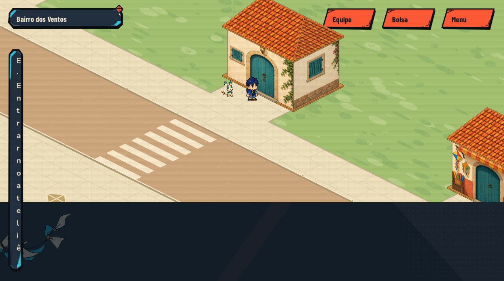
O texto cabe no retângulo, mas quebra letra por letra. Largura do conteúdo precisa fazer parte do teste.
Aceite: Prompt com largura mínima, tecla separada e até duas linhas naturais.
AD-02 · P1Informação da oficina some no fundo
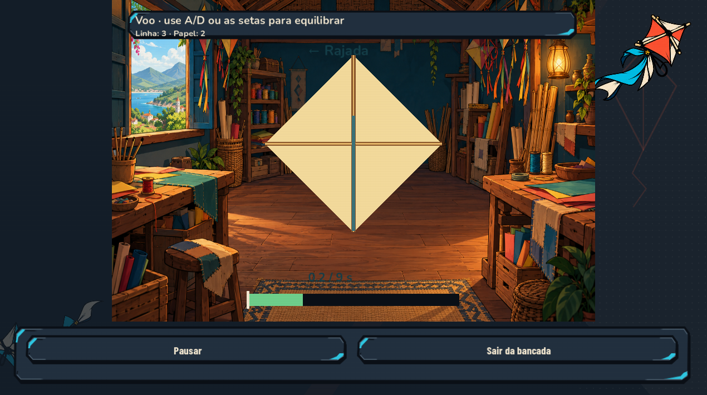
Rajada e cronômetro usam texto escuro sobre madeira e sombras.
Aceite: Fundo estável para leitura, seta de direção e tempo visível com CRT ligado/desligado.
AD-03 / AD-04 · P2Recorte ainda parece placa rígida
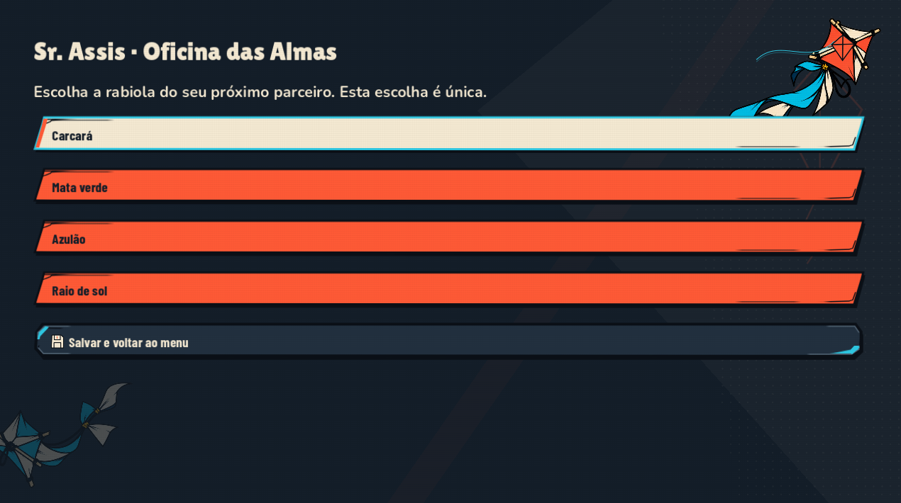
Filetes e chanfros ciano reforçam uma leitura metálica; vários botões coral têm peso de ação principal.
Aceite: Simplificar o material e dar papel semântico estável às cores.
AD-05 / AD-06 · P2O confronto precisa ser protagonista
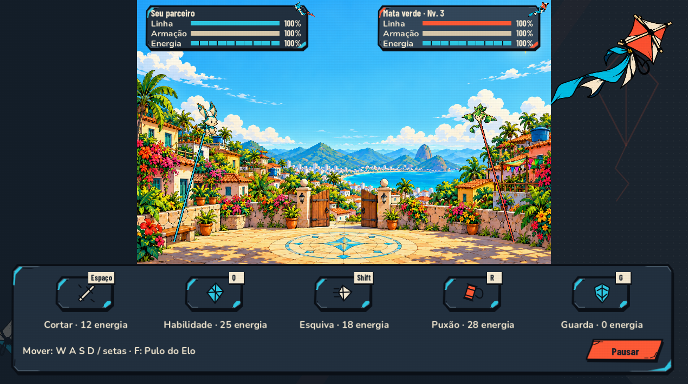
Rodapé grande e adorno lateral recebem espaço que faz falta às criaturas. Os estados têm peso semelhante.
Aceite: HUD independente da arena, ações compactas e prioridade para criatura, risco e ação pronta.
AD-07 · P2Famílias ambientais com acabamento diferente
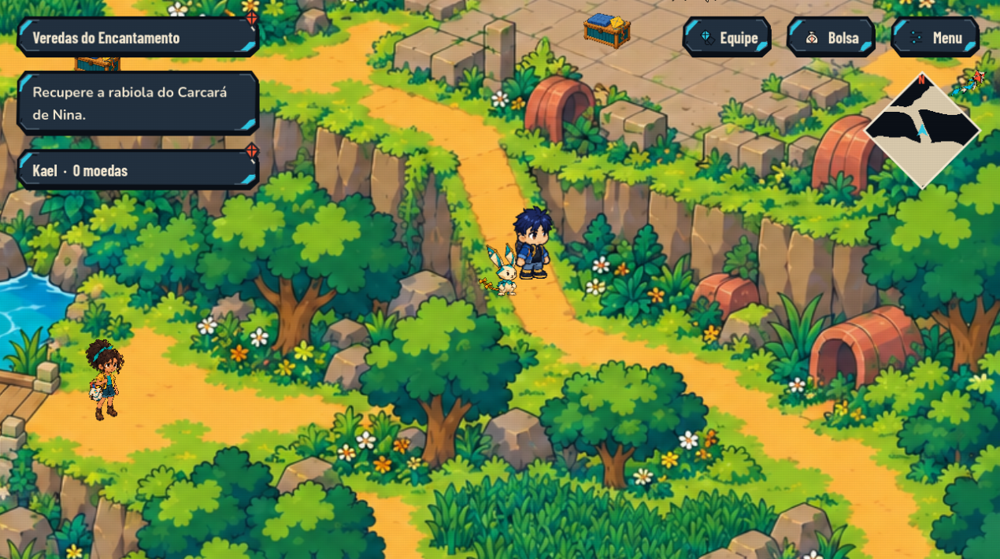
As Veredas oferecem formas amplas e contornos 2D. Rua e arena apresentam densidades bastante diferentes.
Aceite: Usar uma prancha comum de contorno, luz, detalhe e escala para aproximar as áreas.
AD-09 / AD-10 · P2Coleção pouco valorizada
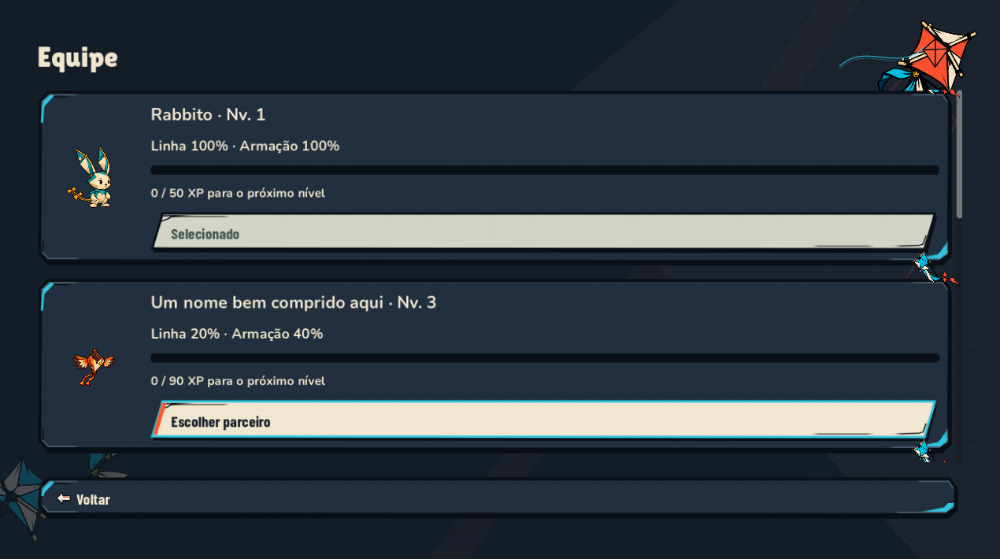
Cards grandes mostram poucas criaturas; botão e moldura dominam a tela.
Aceite: Lista/grade compacta, retratos maiores e detalhe do membro selecionado.
AD-11 · P2Itens diferentes parecem o mesmo objeto
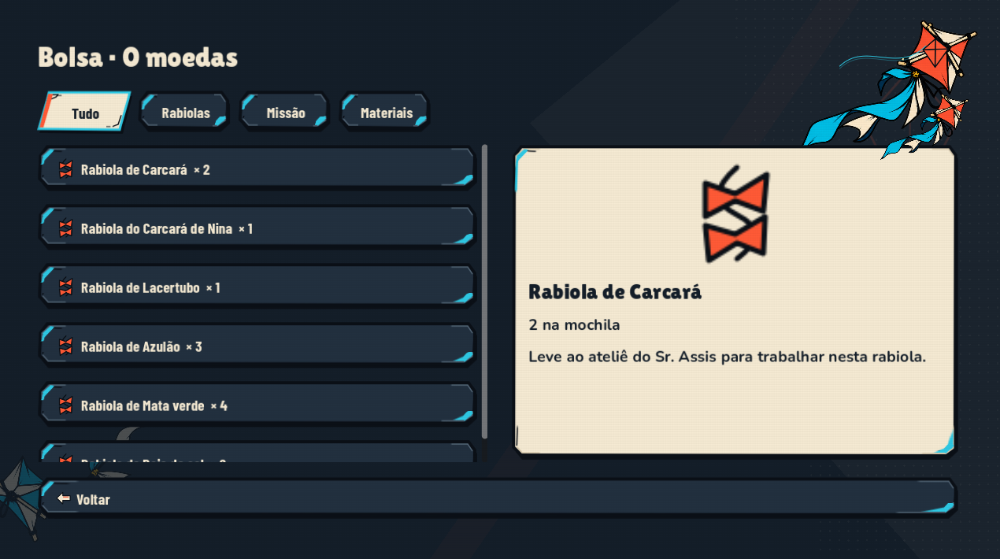
Rabiolas compartilham o mesmo ícone e o item de missão tem pouco destaque próprio.
Aceite: Família de ícones distinta, estado selecionado claro e contexto de missão.
AD-12 · P2Resultado parece recibo
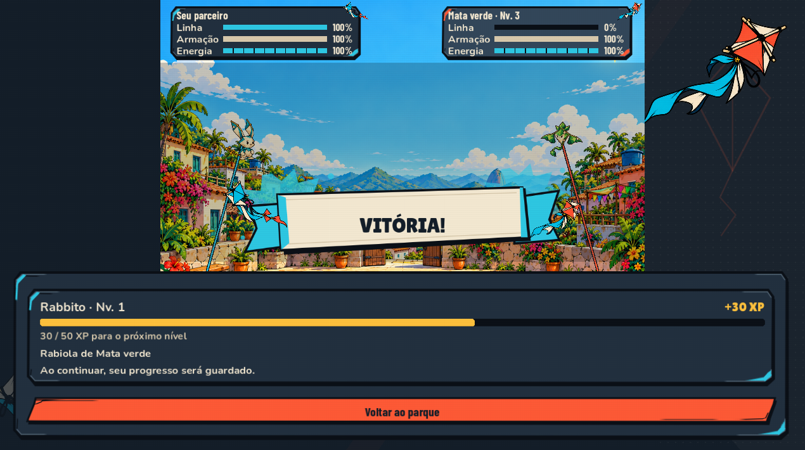
Título, pose e recompensa ficam distantes. A emoção perde espaço para molduras e informação repetida.
Aceite: Composição integrada de pose real, título, XP, itens e continuar.
AD-13 · P2O boss pertence a outra família de material
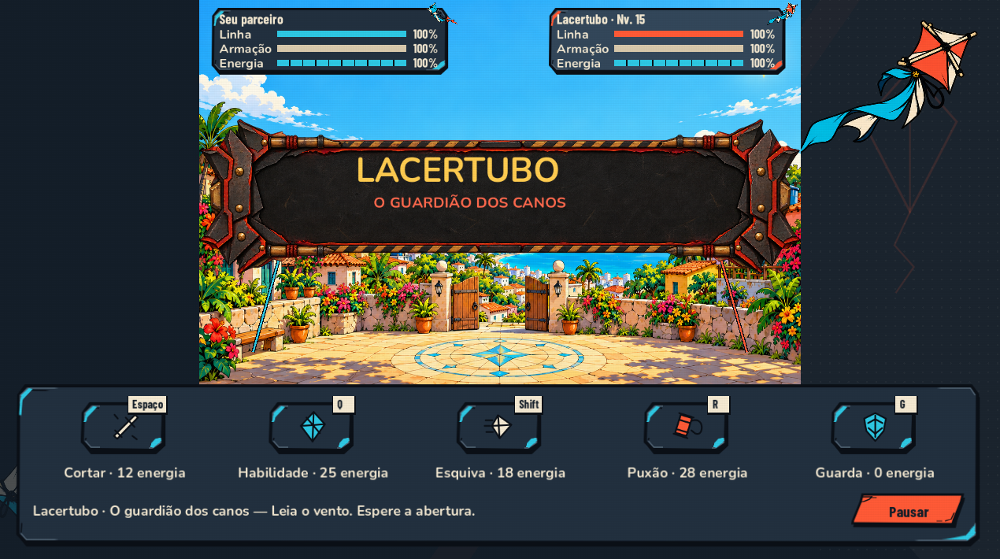
Metal e rebites destoam do papel/tinta. A arena ensolarada não apresenta o lugar dos canos.
Aceite: Ameaça com recorte, tinta coral e arena contextual, mantendo o tempo de jogo.
AD-15 · P2Interruptores exigem interpretação
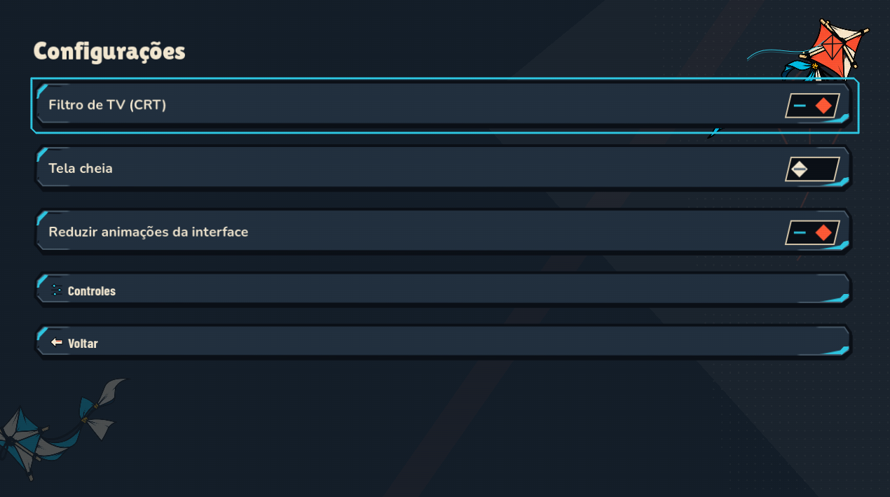
Losango e linha não dizem claramente ligado/desligado numa captura parada.
Aceite: Acrescentar texto de estado e separar foco de ativação.
Preservar · ReferênciaBoa base: retrato e nome separados
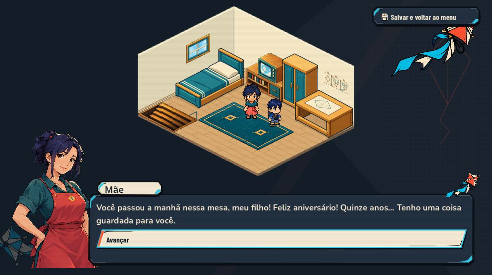
Retrato proporcional fora da caixa é uma base aproveitável; o botão de avanço ainda pode ser mais discreto.
Aceite: Preservar o personagem e reforçar rosto/fala como primeiros focos.
Preservar · ReferênciaBoa base: pausa diagonal
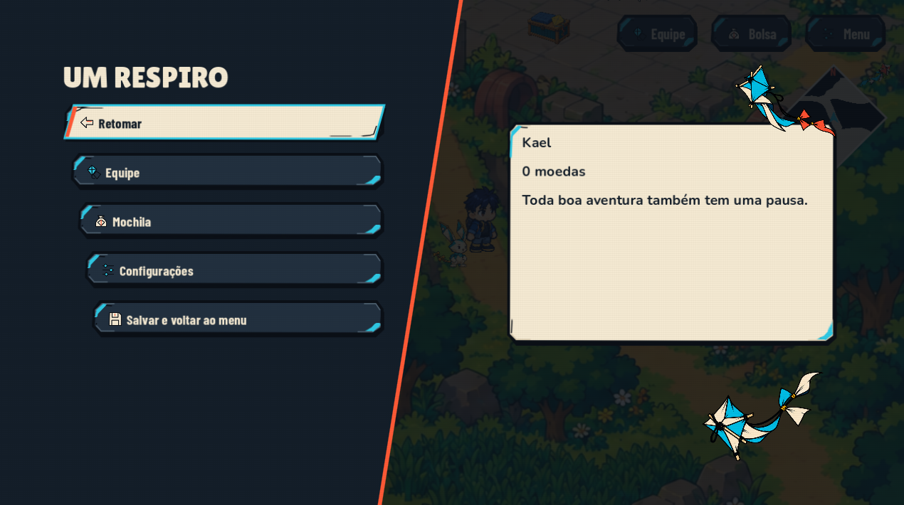
A divisão da navegação funciona; o card de resumo ainda pode trazer informação mais útil.
Aceite: Preservar composição e trocar preenchimento genérico por estado relevante.